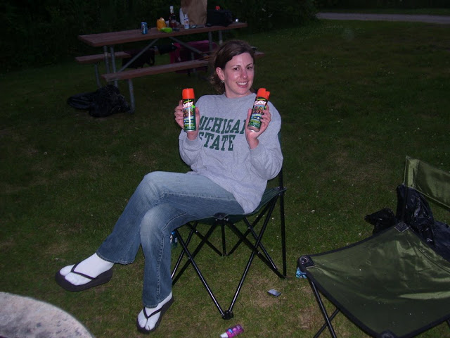

Packing 101
This packing list assumes that you are camping in the spring or summer time for a three day two night trip. It also assumes that you are “car camping” and you won’t be backpacking into your campsite. Backpacking is a lot of fun, but one of the primary concerns is the weight of your pack. This list doesn’t take into consideration weight.
What to pack
- Shelter and sleeping
- Clothing for All
- Toiletries
- The Camp Kitchen
- First Aid Kit
- Handy Campsite Tools
- Light Sources
- Miscellaneous
Shelter and Sleeping
Ground cloth or tarp to lay your tent on
Tent(s)
Sleeping pads for everyone
Sleeping bag (rated to 20 to 50F)
Pillows
Portable chairs and stools
Clothing for All
Trail-running shoes or hiking boots (broken in and waterproofed)
Sandals/flip-flops
4-5 Pairs of Socks
2-3 Pairs of pants or shorts
3-4 Pairs of underwear
3-4 Pairs of T-shirts
1 Pair of long pants or sweats
1 Sweatshirt or hoody
Rain/wind jacket and pants
Pajamas
Quick Dry Bathing suits
Sunglasses
Swim towels
Water shoes (for walking in rocky waters and/or public shower use)
Toiletries
Bath towels and washcloths
Soap
Hand sanitizer
Shampoo
Quarters for pay showers
Toothbrushes/toothpaste
Deodorant
Toilet paper and trowel
Sunscreen
Lip balm
Baby wipes (very handy for campsite cleanup)
The Camp Kitchen
A standing grill grate if you plan on cooking over a fire.
Matches/lighter
Cooking pots and pans – preferably no plastic handles if you planning on cooking over a fire.
Extra water (to keep at your site)
Utensil set (including spoons, knives, forks, and cooking utensils such as serving spoons, knives, and spatulas)
Can opener
Plates, cups, bowl – A camping mess kit or paper and plastic will work.
Cooler and ice
Dish detergent
Dish towels
Sponge/scraper
Plastic basin (for washing dishes)
Paper towels
Trash bags
Aluminum Foil
Ziploc bags
Hot pads
Citronella candle
Garbage Bags
*optional – you may want to bring a propane camp stove. I personally stick with cooking over the fire though.
**Due to the Emerald Ash Boar don’t bring wood or kindling to your campsite from home. You can usually buy wood for fires in or around the campground areas.
First Aid Kit
Sun Screen
Aloe Vera – For sun burns
Bug repellent
Aspirin
Bandages
Antibiotic ointment/wipes
Tweezers (good for removing splinters and ticks)
Burn ointment
Poison ivy treatment
Benadryl
Thermometer
Handy Campsite Tools
Rope
Clothespins
Duct tape
Multi-tool/utility knife
Small handheld broom (for sweeping out the tent)
Light Sources
Lantern (at least one per tent makes camping much more enjoyable)
Headlamps or flashlights with extra batteries.
Miscellaneous
Water Bottles
Play Equipment
Camera and film
Video camera
Reading material for all
Guidebooks and maps
Camping reservation info
Back to top